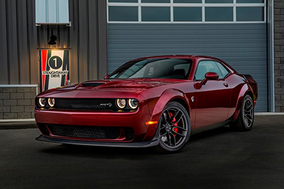
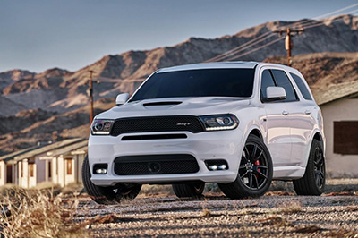

Dodge Challenger SRT

Dodge Challenger er en av de mest kjente og populære muskelbilene noen gang, det finnes mange generasjoner av dem og produksjonen startet først i 1958.
Dodge challenger SRT kommer med 707 hestekrefter. Det er også laget en versjon som har 840 hester og 0-100 på 2,3 sekunder.
Dodge Durango SRT

Dodge startet med produksjonen av Durango i 1998, men den har ikke kommet i SRT versjon før nå.
Denne suven er veldig sporty, og har en 6,4 liters V8 Hemi-motor som gjøer 0-100 på 4,8 sekunder.